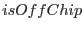

interface instToRaw
subroutine instToRawScalarInt16(rawX, rawY, detX, detY, thetaArcsec, phi)
real(single), intent(in), optional :: detX,&
detY
real(double), intent(in), optional :: thetaArcsec,&
phi
integer(int16), intent(out) :: rawX,&
rawY
end subroutine instToRawScalarInt16
subroutine instToRawVectorInt16(rawX, rawY, detX, detY, thetaArcsec, phi)
real(single), intent(in), optional :: detX(size(rawX)),&
detY(size(rawX))
real(double), intent(in), optional :: thetaArcsec(size(rawX)),&
phi(size(rawX))
integer(int16), intent(out) :: rawX(:),&
rawY(size(rawX))
end subroutine instToRawVectorInt16
subroutine instToRawScalarReal32(rawXreal, rawYreal, detX, detY&
, thetaArcsec, phi, isOffChip)
real(single), intent(in), optional :: detX,&
detY
real(double), intent(in), optional :: thetaArcsec,&
phi
real(single), intent(out) :: rawXreal,&
rawYreal
logical(bool), intent(out), optional :: isOffChip
end subroutine instToRawScalarReal32
subroutine instToRawVectorReal32(rawXreal, rawYreal, detX, detY&
, thetaArcsec, phi, isOffChip)
real(single), intent(in), optional :: detX(size(rawXreal)),&
detY(size(rawXreal))
real(double), intent(in), optional :: thetaArcsec(size(rawXreal)),&
phi(size(rawXreal))
real(single), intent(out) :: rawXreal(:),&
rawYreal(size(rawXreal))
logical(bool), intent(out), optional :: isOffChip(size(rawXreal))
end subroutine instToRawVectorReal32
end interface
These subroutines convert to chip coordinates (ie, the RAWX/Y or PIXCOORD1 system) from instrument-centric coordinates, the latter being either the DETX/Y (the same, up to a scalar multiple, as the CAMCOORD2 system) or the TELCOORD system, depending on which of the optional variables  ,
,  ,
,  and
and  the caller has supplied.
the caller has supplied.
The `int16' routines employ the cal calls CAL_camCoord1ToChipCoord and CAL_chipCoordToPixCoord1. However, these calls have two drawbacks: firstly, they return integer values, and secondly, they are only valid `on-chip'. However there are occasions when it is desirable to obtain finer precision in the chip coordinates and also to be able to out of the strict range. For this reason I wrote the `real32' routines. The latter do not use the cal calls mentioned above. Instead they first move forward by calculating the instrument-centric coordinates of the corners of the CCD; this information is then iused to perform a linear back-transformation of the input instrument-centric coordinates. The logical variable  is also set.
NOTE this subroutine requires the cal to have been set to the correct instrumentId, ccdChipId and (if instrumentId is EMOS1 or EMOS2) ccdNodeId before the call.